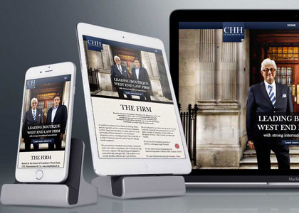
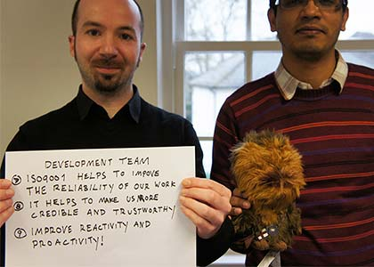

The powerful approach to designing and building mobile-friendly websites
Responsive web design is a powerful way to create mobile-friendly websites. Our experts can help you raise user engagement and retention, with a website that can scale seamlessly across devices: resizing structure and content automatically.
10 YEARS OF INNOVATING OUR OWN PROCESSES
RESPONSIVE WEB DESIGN
Businesses must cater for the growing mobile market. Half of all website traffic comes from smartphones and tablets, of all shapes and sizes. Mobile-friendliness can even influence how high websites rank in organic search results.
We will help you launch a fully responsive website, whether you need a fresh, unique design or retrofit for an existing site. Our responsive web design agency has experience in developing bespoke, striking websites in as little as five weeks.
USER-CENTRED DESIGN PROCESS
Working under our ISO accredited user-centred design process, we can design for the desires of your specific audience. We tailor experiences across devices with mobile-first production: from content strategy and interaction design, right through to build.
By focusing on great user experiences from small screen to big, our responsive web design agency can increase conversion rates and ensure return on investment (ROI) for clients.

Our mobile strategy and responsive design for GSK’s MaxiNutrition increased mobile conversions by 79%.
HIGH PERFORMANCE TECHNOLOGIES
performance is critical on mobile. Website speed and size has a massive impact on abandonment and conversion rates: over half of smartphone users expect websites to load in under four seconds. Since 2005, our development experts have created fast, flexible websites that perform consistently across devices. Specialising in the latest HTML5 and CSS3 technologies, the team is well versed in popular responsive frameworks like Bootstrap. We’ve even developed Hoisin: our own lightweight, customisable framework, which underpins our best responsive projects.